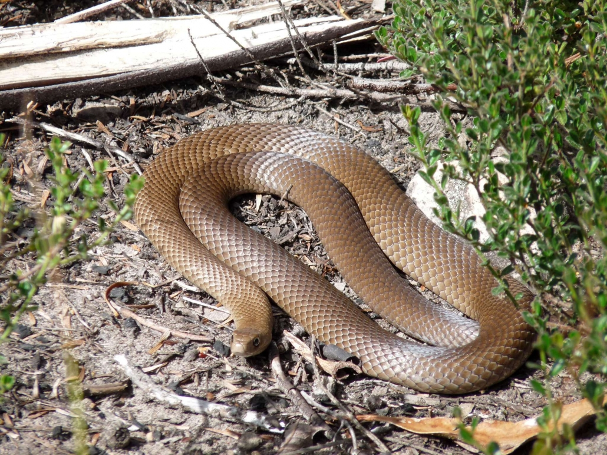
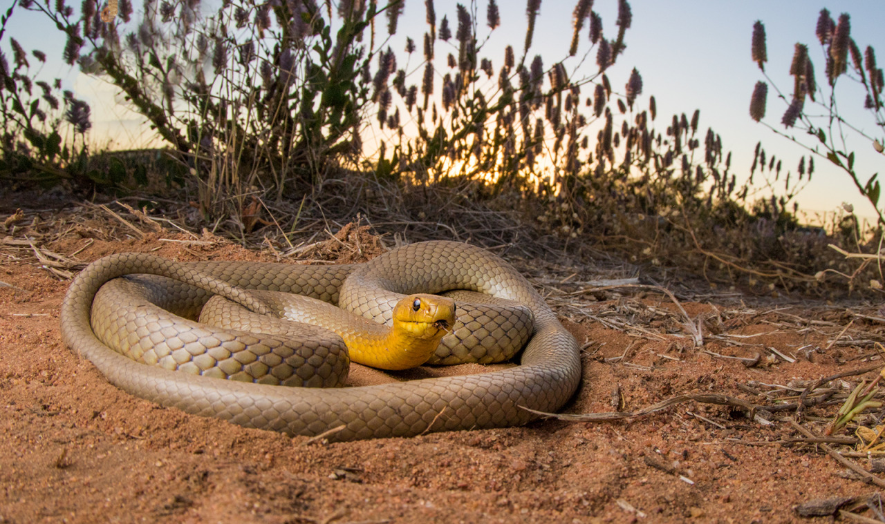
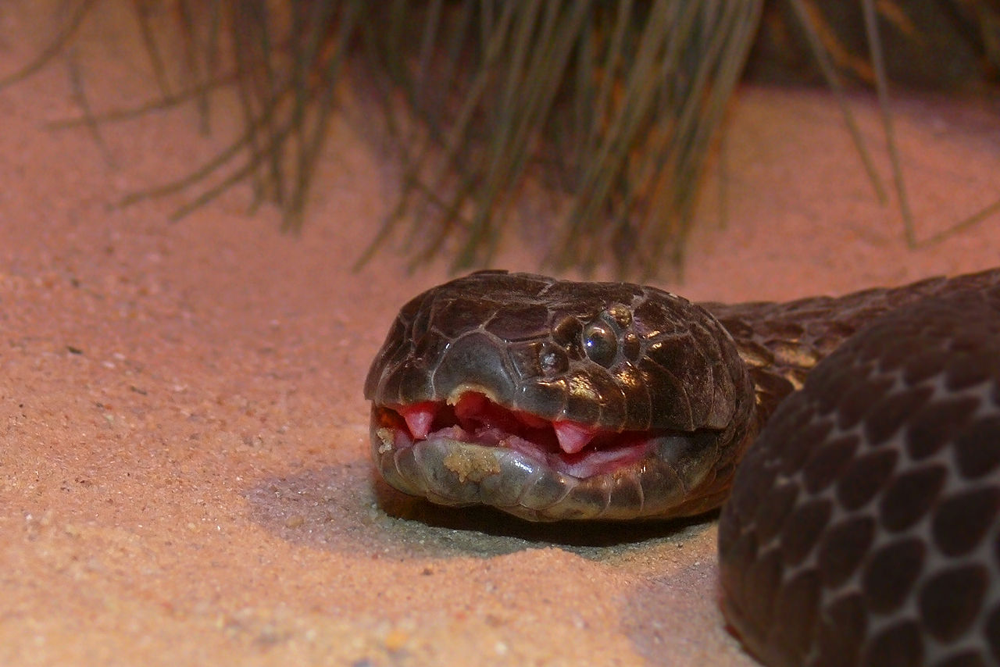
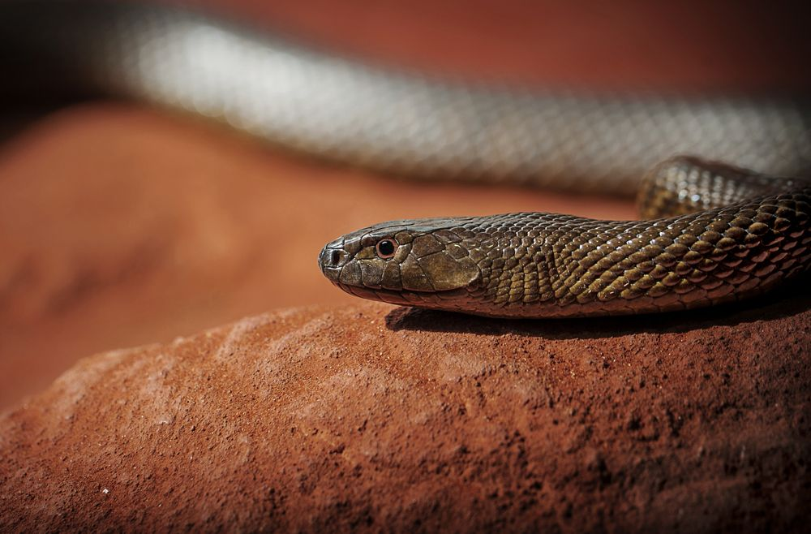
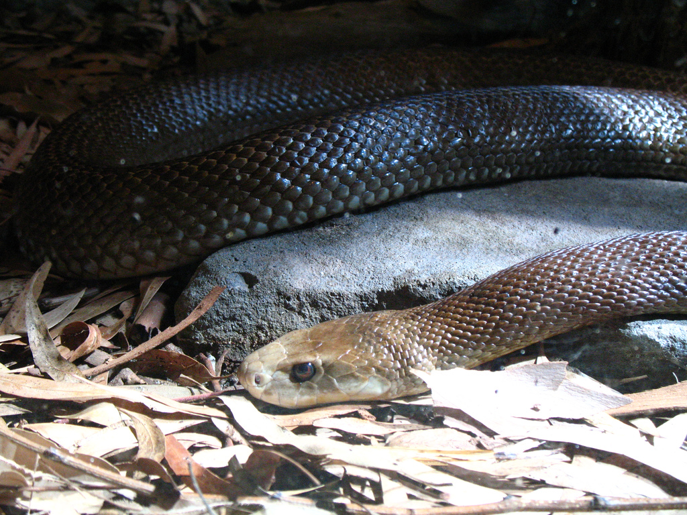

Here are the top 5 most dangerous snakes in Australia:
(Click on the image or text to view more information about the snake)
1. Eastern brown snake

2. Western brown snake

3. Mainland tiger snake

4. Inland taipan

5. Coastal taipan

To view all snakes in Australia, please click here.